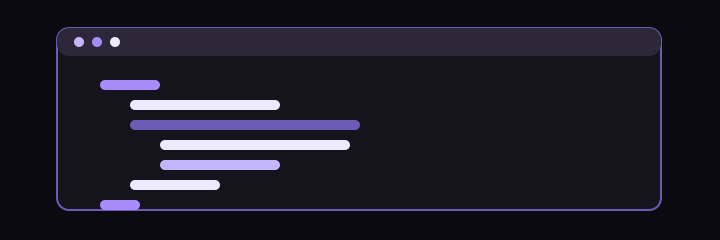
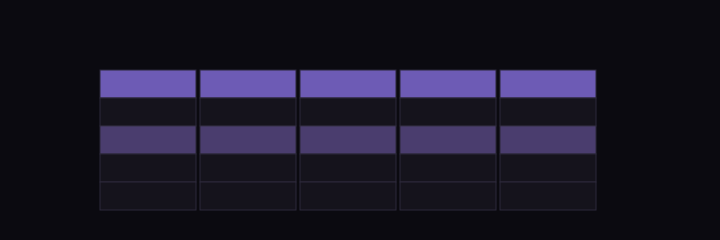
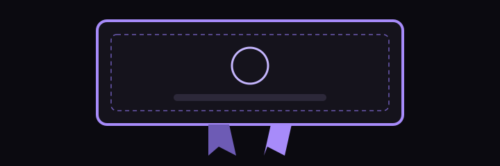

Christa Magat
I’m interested in understanding how technology works and how it shapes the way people live and work. As an IT student, I’m developing the knowledge and skills to pursue a career in the field and contribute to creating and improving the systems and applications people rely on every day.
$ whoami
Christa Magat, an IT student
$ ls projects
multimedia-site java-grade-checker sql-sandbox networking-certificate

// objectives
Where I Want to Go
- 01
Strengthen My Technical Skills
Continue improving my knowledge of programming, networking, and server management through practice and hands-on learning.
- 02
Build Meaningful Projects
Work on practical projects that allow me to apply what I learn and confidently explain how they work.
- 03
Start a Career in IT
Use the knowledge and experience I gain from my studies to prepare for professional opportunities and build a career in the IT industry.
// currently
Studying IT
I am a BSIT 3-7 student, currently learning advanced level programming and networking.
// projects
Four projects
- 01Multimedia Portfolio WebsiteWebA website project created for my Multimedia course.
- 02Tamagotchi Pet GameProgrammingA Java pet game with a playable browser version. Choose a pet, give it a name, and take care of it through different activities.

- 03SQL SandboxDatabaseA simple in-browser SQL editor for writing and testing queries using a sample student database.

- 04Certificates and BadgesNetworkingA collection of Cisco Networking Academy certificates and badges earned through my IT studies.

// try it
Try them in your browser
The SQL sandbox and the pet game both run right in the page.
// github